03 - TURN IN - Editing with QGIS
Note: To make sure you are viewing the most recent version of this lab guide, hold Shift and click the browser refresh button.
Turn-in for grading: This lab includes material that must be turned in for grading. Complete the required deliverables and submit them as instructed by the course.
This lab introduces basic digitizing in QGIS. You will create point, line, and polygon layers from imagery of the O'Donohue Family Stanford Educational Farm and practice the editing workflow needed to build clean vector data.
You should read Chapter 4 in the GIS Fundamentals textbook before starting, since it covers the basics of data entry and digitizing mechanics.
Getting Ready for the Lab
We will be using an image of the Stanford Teaching Farm for this exercise. That image is stored as a Cloud-Optimized GeoTIFF (COG) on AFS Space.
You can find the Persistent URL Page for the dataset here: https://purl.stanford.edu/vq494qx9344
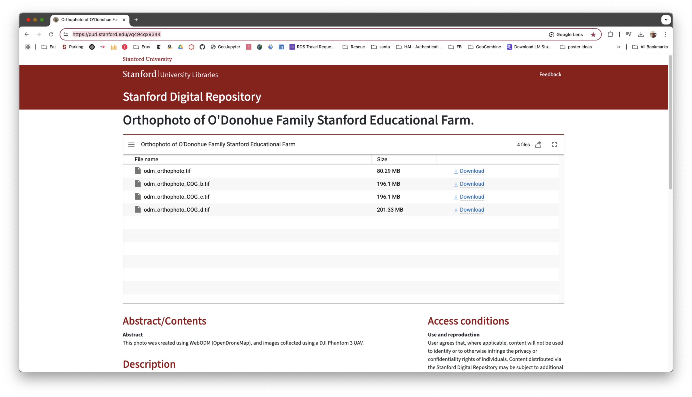
We will use the file odm_orthophoto_COG_d.tif for this lab. The direct URL is:
https://web.stanford.edu/~maples/cog/collection/odm_orthophoto_COG_d.tif.
Step 1: Adding the COG to QGIS
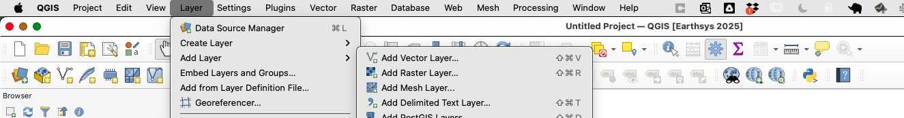
- In the dialog, click Source Type and select Protocol.
- Paste the URL:
https://web.stanford.edu/~maples/cog/collection/odm_orthophoto_COG_d.tif
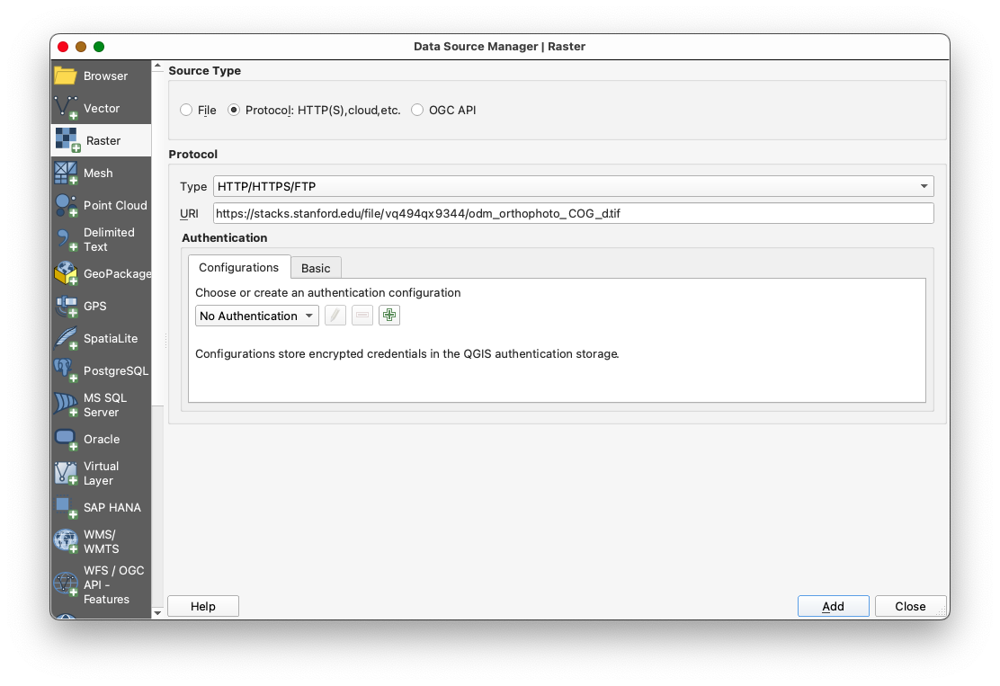
- Click Add to load the COG into your project.
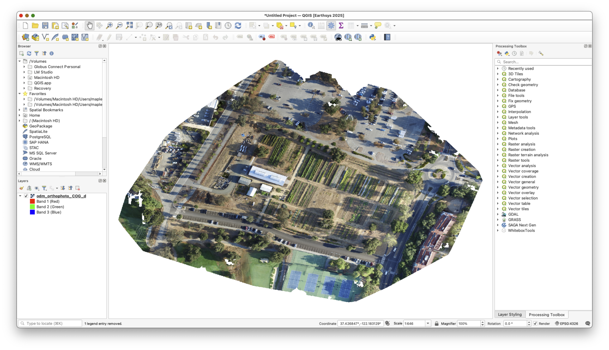
Notes on COG Performance
- Initially, the COG may load slowly as QGIS fetches data from the server.
- As you pan and zoom around the image, QGIS will cache the views, improving performance over time.
- To cache views, pan around the area of interest (the Farm property) before starting digitization.
Step 2: Adding Google Hybrid Imagery
- Install the Quick Map Services plugin if not already installed.
- Add Google Hybrid imagery:
- Go to Web > Quick Map Services > Google > Google Hybrid.
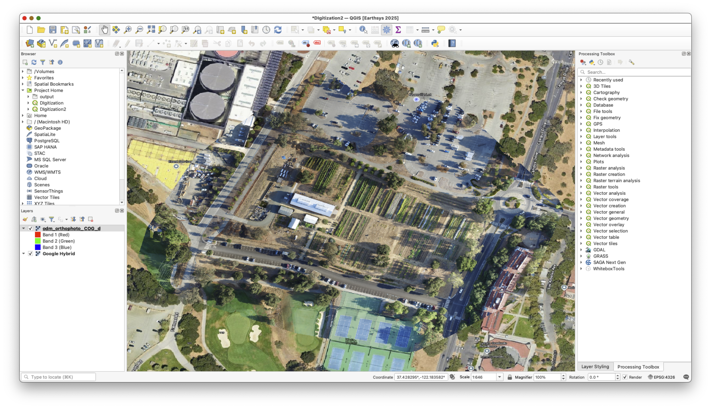
Step 3: Creating New Empty Layers
The first step in creating a new spatial dataset using “heads up digitizing” is to create a new empty layer for your features to go into. In this case, we will create three empty shapefiles: one for points, one for lines, and one for polygons.
- Go to Layer > Create Layer > New Shapefile Layer.
- A window will open with entries for a file name, geometry type (e.g., point, line, polygon), coordinate system, and field characteristics for a table.
Create Three Layers:
First Layer: Trees (Points)
- Browse to your Lab folder, create a new subfolder called
data, and save the shapefile as file:trees.shp - Set the Geometry Type to "Point".
- Set the coordinate system to EPSG:4326 - WGS84 (use the drop-down list to select the Project CRS).
- Add an attribute field named
Tree_ID(type: Integer 32-bit).
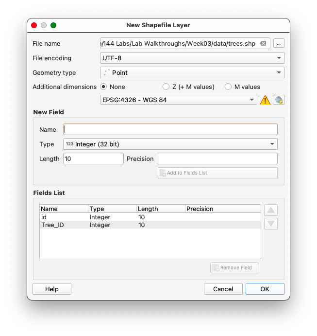
- Leave the remainder of the options blank and click OK.
Second Layer: Rows and Paths (Lines)
- Browse to your Lab Data folder and name the file: paths.
- Set the Geometry Type to "LineString".
- Set the coordinate system to EPSG:4326 - WGS84.
- Add an attribute field named
Path_Type(type: Text).
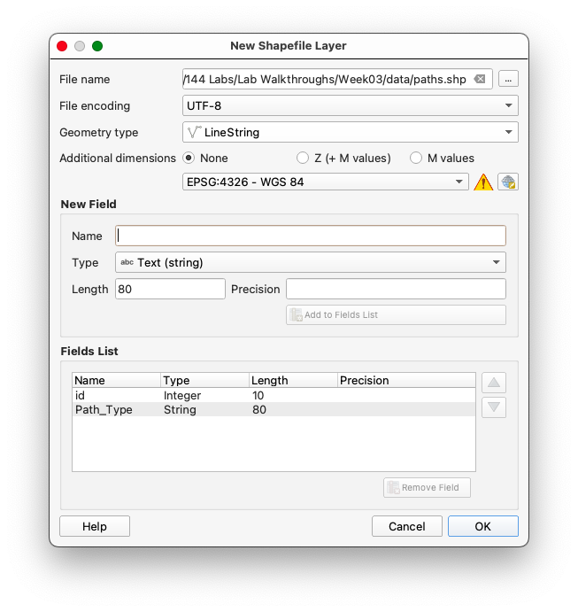
- Leave the remainder of the options blank and click OK.
Third Layer: Structures (Polygons)
- Browse to your Lab Data folder and name the file: structures.
- Set the Geometry Type to "Polygon".
- Set the coordinate system to EPSG:4326 - WGS84.
- Add an attribute field named
Name(type: Text).
- Leave the remainder of the options blank and click OK.
- You should now see 3 new layers in you Layers panel
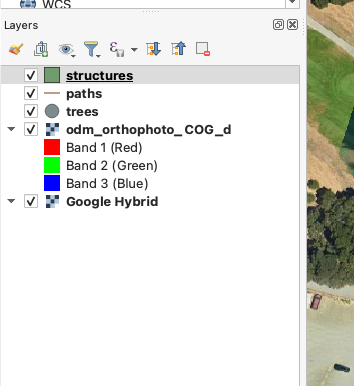
Why Use WGS84 as the Coordinate System?
WGS84 is a good archival choice because it is the default geographic CRS used by GPS and many GIS platforms. In this lab, using WGS84 keeps the new layers broadly compatible and easy to reuse later.
Step 4: Digitizing Features
Understanding Heads-Up Digitizing
Heads-up digitizing is the process of tracing spatial features directly from imagery or another visual reference. In this lab, you will use that workflow to create points, lines, and polygons from the farm image.
Points: Digitizing Trees
- Right-click the trees layer in the Layers panel, and toggle editing mode.
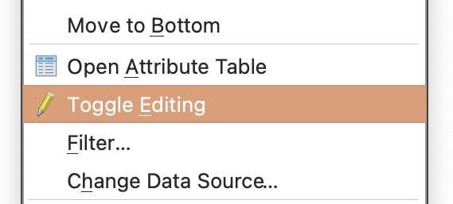
- Use the Add Point Feature tool
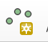
to place a point on each tree within the Farm property:- Toggle between the COG and Google Hybrid imagery for better identification.
- Assign a unique
Tree_IDto each tree (keeping in mind you set the field type toInteger). - Remember to save your edits by toggling off editing mode and confirming the changes when prompted.
Tips & Tricks
Adjusting symbology
Often it is useful to adjust the symbology of your layers to better contrast with the basemap, so that your progress is immediately apparent.
To adjust the symbology of the features:
- Click on the Styling Button (represented by a paintbrush) to open the Styling Panel.
- Adjust the basic symbology:
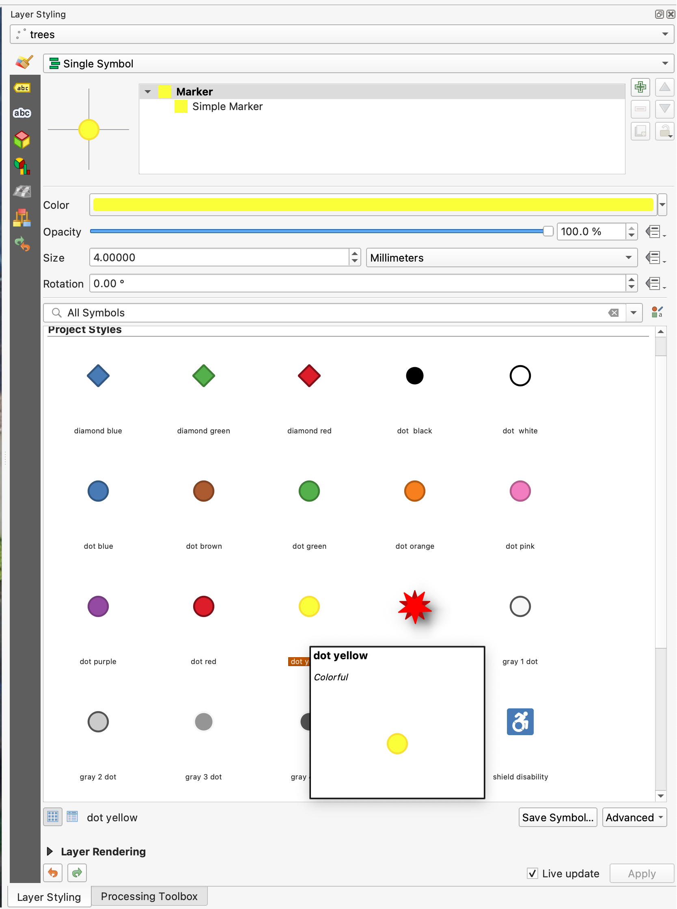
These adjustments improve the visibility of features, making them easier to analyze and interpret in the context of the basemap.
Dismissing the attribute editor pop-up
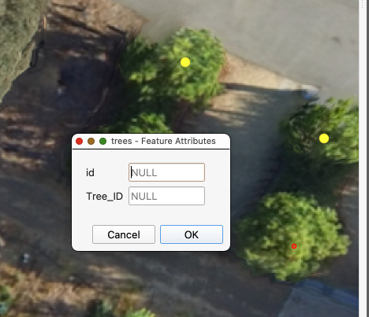
You've noted by now that the Feature Attributes Editing pop-up appears after every point is placed. If you aren't adding variables, this can slow the workflow, considerably.
Remember to save your edits by toggling off editing mode and confirming the changes when prompted.
To suppress the Feature Attribute Editing pop-up:
- Go to Settings > Options in the QGIS menu.
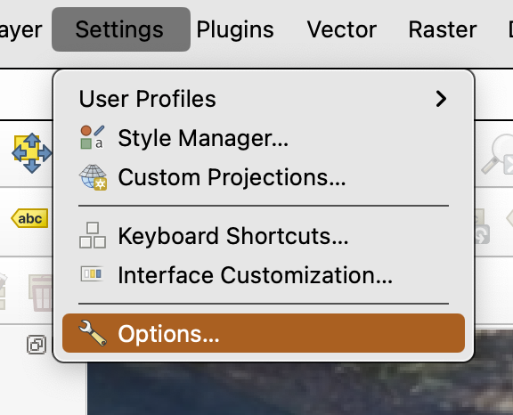
- Navigate to the Digitizing tab.
- Under the Feature creation section, uncheck the box labeled Open feature form after adding a new feature.
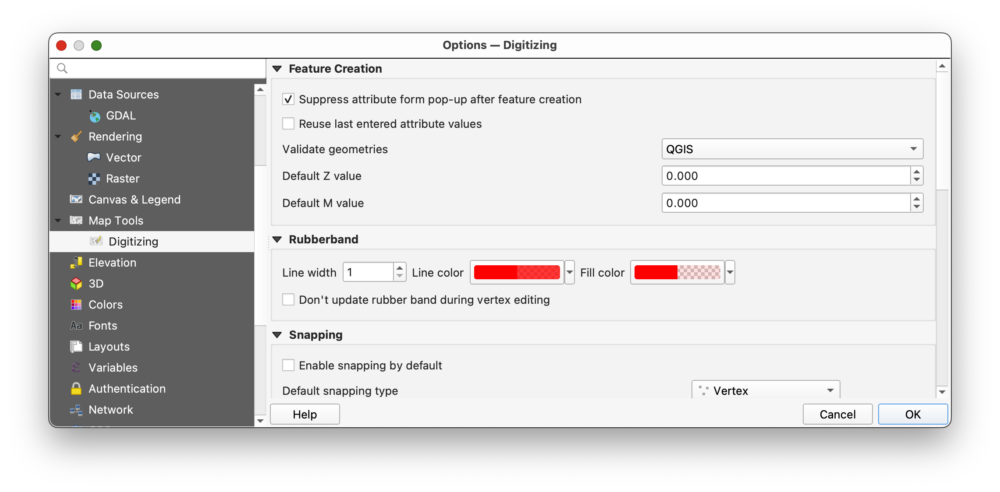
- Click OK to save the changes.
This will prevent the attribute editor from appearing after each point is placed, streamlining your digitizing workflow.
Editing features after you've placed them
Using the Vertex Tool for Editing Features
The Vertex Tool in QGIS allows you to modify features by interacting with their vertices. This tool is particularly useful if you have placed a feature incorrectly during an edit session.
A) Deleting a Feature
- Ensure you are in an active edit session for the layer you are working on.
- Activate the Select Features by Area or Single Click tool
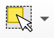
from the toolbar. - Click on the feature you want to delete to select it.
- Press the Delete key on your keyboard.
- Dismiss the warning pop-up
y
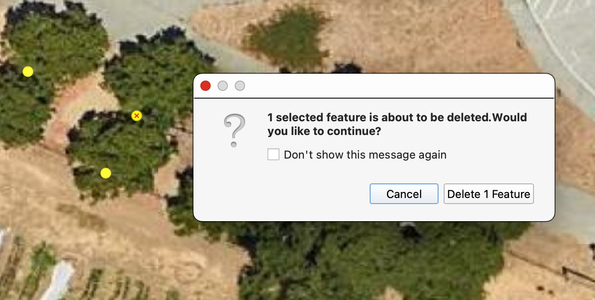
B) Moving a Feature
- Ensure you are in an active edit session for the layer you are working on.
- Activate the Vertex Tool from the toolbar.
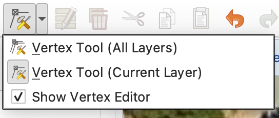
- Click on the feature you want to move. The vertices of the feature will become visible.
- Drag the feature to the correct location by clicking and holding anywhere within the feature's boundary.
- Release the mouse button to place the feature in its new position.
Remember to save your edits by toggling off editing mode and confirming the changes when prompted.
Setting up keyboard shortcuts for navigating the map while editing
Keyboard shortcuts can significantly streamline workflows like digitizing by reducing the need to switch between tools using the mouse. Efficient navigation shortcuts allow you to pan and zoom quickly, enabling seamless transitions between editing and navigating the map. This can save time and improve focus, especially when working on large or detailed datasets.
To set up custom keyboard shortcuts for navigation in QGIS:
- Go to Settings > Keyboard Shortcuts in the QGIS menu.
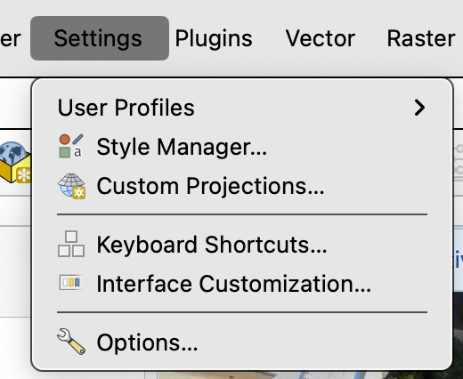
Search for the following actions and assign the corresponding keys by clicking on the Change button and then the key combination you want to assign to the action.
Pan: Assign the key
C.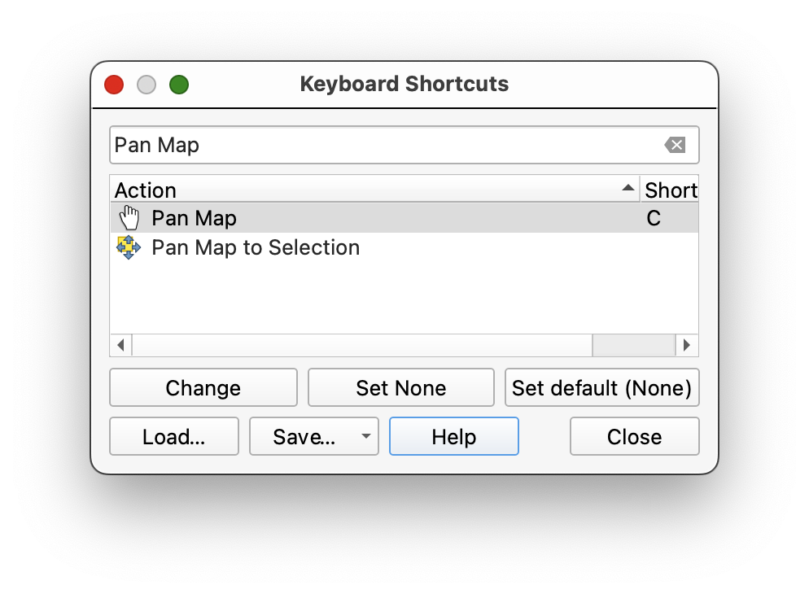
Zoom In: Assign the key
Z.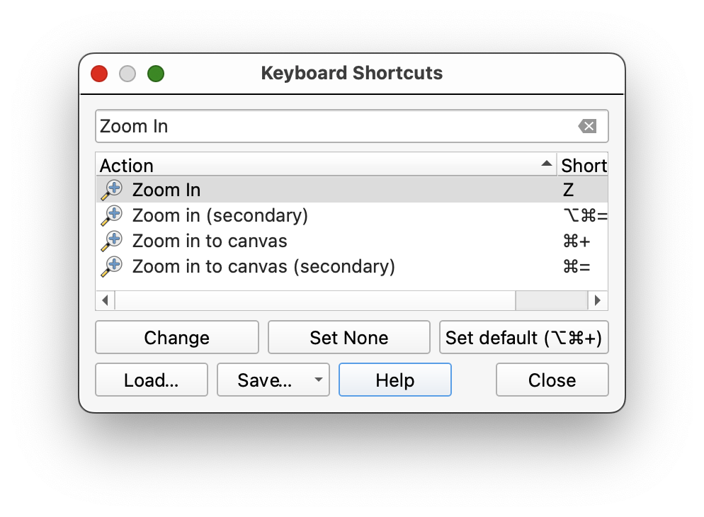
Zoom Out: Assign the key
X.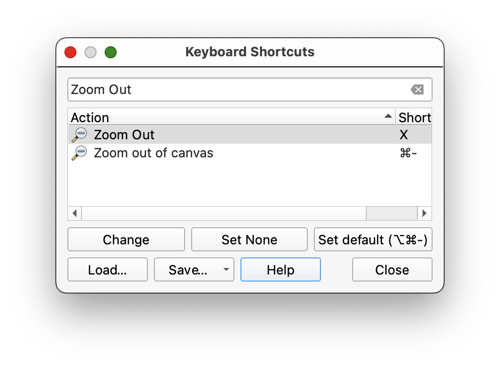
Add Point: Assign the key
v.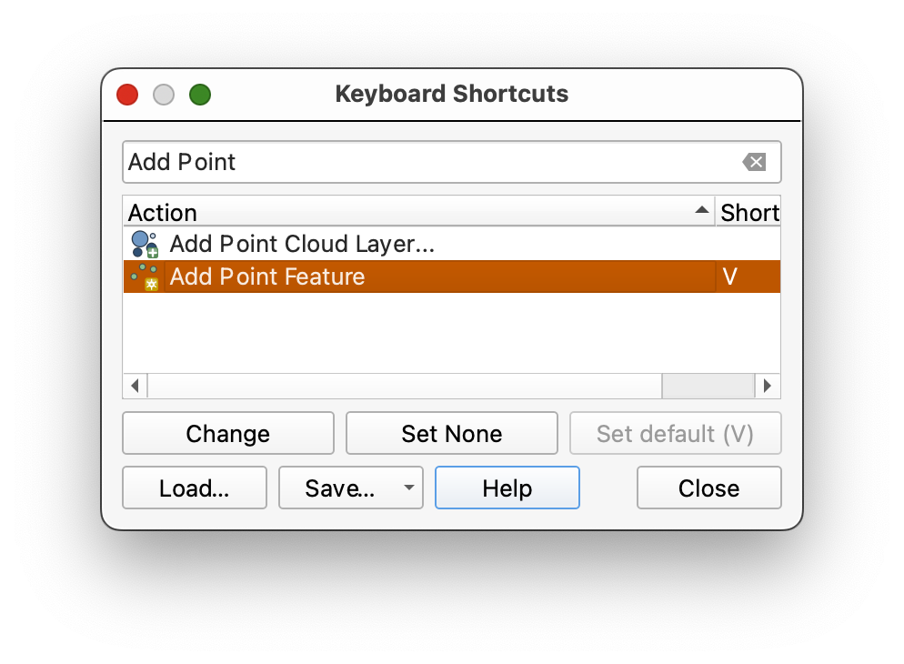
- Click Close to save your changes.
- Save your Project and restart QGIS.
Once configured, you can use these shortcuts to quickly pan and zoom while digitizing. For example, press C to pan the map, then switch back to your editing tool using the V key without needing to click on the toolbar. This allows for a smoother workflow and minimizes interruptions during the digitizing process.
Digitizing continued...
Understanding Lines in GIS
Lines in GIS are essentially a series of points connected in sequence, forming a continuous path. Each point, or vertex, represents a coordinate pair that defines the shape and direction of the line. When digitizing lines, it is important to place vertices at key locations, such as intersections, curves, or changes in direction, to accurately represent the feature being mapped. Careful placement of vertices ensures that the line follows the intended path and aligns with other features, especially when snapping is enabled. Digitizing lines requires attention to detail and a balance between precision and efficiency, as overly dense vertices can complicate data management, while too few may result in a loss of accuracy.
Lines: Digitizing Paths and Sidewalks
- With the paths layer selected in the Layers Panel, toggle editing on. into the project and toggle editing mode.
Enable snapping for topological accuracy:
- Go to Project > Snapping Options.
- Enable snapping for the line layer and set the tolerance to 10 pixels.
Check Avoid Overlaps and Enable Topological Editing, snapping on intersection and self-snapping.
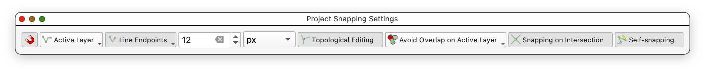
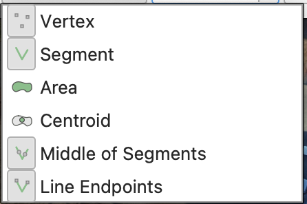
- You can dismiss the Project Snapping Settings dialog, once you have made the change to settings.
Sidenote: What is Snapping?
Snapping ensures that vertices and edges of features align precisely, preventing gaps or overlaps. This is crucial for creating topologically correct data, especially for networks like paths and sidewalks.
Use the Add Line Feature tool
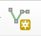
to trace paths and sidewalks:Place vertices at intersections to ensure proper snapping for network integration.
- To FINISH DRAWING A LINE, right-click (two-finger click on Mac) AFTER you place the final vertex (coordinate pair).
- Don't forget to save your edits using the Save Edits button
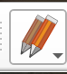
, periodically. - Once you have digitized the paths, try digitizing one block of the planting rows. Harder than it seems, at first? There are many judgement calls involved in digitizing data from satellite and aerial imagery, since we are usually limited to the one instantatneous snapshot, without other data to refer to.
Polygons: Digitizing Structures
Generalization and Digitizing Complex Shapes
When digitizing complex shapes and curves, the level of detail captured can significantly affect the accuracy of measurements such as area and length. This concept is closely related to the idea of generalization in GIS, where the complexity of a feature is simplified to make it more manageable or to fit the scale of the map. However, over-generalization can lead to a loss of critical detail, while under-generalization can result in overly complex datasets that are difficult to work with.
A classic example of this phenomenon is illustrated in Benoit Mandelbrot's "How Long Is the Coast of Britain?" paper. Mandelbrot demonstrated that the measured length of a coastline depends on the scale of measurement and the level of detail captured. When using a finer scale (smaller measurement units), more intricate details of the coastline are included, resulting in a longer measured length. Conversely, using a coarser scale (larger measurement units) smooths out smaller features, leading to a shorter measured length. This paradox highlights the fractal nature of natural features and the challenges of accurately representing them in a digital format.
In the context of digitizing, this means that the placement of vertices and the resolution of the reference imagery can greatly influence the resulting dataset. For example:
- High Detail: Capturing every curve and nuance of a feature may produce a highly accurate representation but can lead to large file sizes and increased processing time.
- Low Detail: Simplifying the shape by reducing the number of vertices can make the dataset more manageable but may omit important features or distort the true shape.
When digitizing complex shapes such as curved paths, irregular boundaries, or natural features like rivers and coastlines, it is essential to strike a balance between accuracy and efficiency. Consider the purpose of the dataset and the scale at which it will be used. For large-scale maps, finer details may be necessary, while for small-scale maps, generalization may be more appropriate.
By understanding the trade-offs involved in digitizing complex shapes, you can make informed decisions about the level of detail to capture, ensuring that your datasets are both accurate and fit for purpose.
Steps for Digitizing Polygons
- With the structures layer selected in the Layers Panel, toggle editing mode.
Enable snapping for polygons:
- Go to Project > Snapping Options.
- Enable snapping for the polygon layer and set the tolerance to 10 pixels.
- Check Avoid Overlaps and Enable Topological Editing.
Use the Add Polygon Feature tool
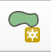
to trace the outlines of buildings and other structures:- Place vertices at key points along the boundary of the structure, such as corners or changes in direction.
- Note that the polygon appears closed as you add vertices, with a straight line connecting your first point, and the cursor, as soon as you place your 3rd point. To finish each feature, right-click (or two-finger click) anywhere in the map, after you place the last vertex. QGIS will automatically place a final vertex at the same location at the first, closing the polygon, for you.
- Once you have digitized all of the features on the farm, save your edits using the Save Edits button .
Tips for Accurate Polygon Digitization
- Snapping: Use snapping to align polygon edges with adjacent features, ensuring there are no gaps or overlaps.
- Zooming: Zoom in to capture fine details and ensure precise placement of vertices.
- Symbology: Adjust the symbology of the polygon layer to make it easier to distinguish from the basemap.
Step 4: Saving and Exporting Data
- Save your edits for each shapefile by toggling off editing mode.
- Export the shapefiles if needed:
- Right-click the layer in the Layers Panel and select Export > Save Features As. -
To turn in:
- Using your skills as a cartographer, and your creativity, create a reference map that displays the features you have digitize, with appropriate symbologies, cartographic elements, descriptive text (Title, Date, CRS, Your Name, and any additional explanatory text necessary, etc...).
- Export your map as a PDF and submit it in Canvas.
Course turn-in rule: All
TURN_INassignments in this course are submitted as PDF files. For this lab, the PDF is your exported map layout.